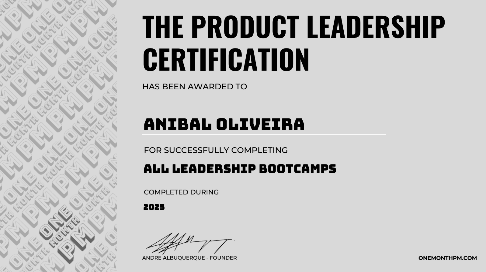
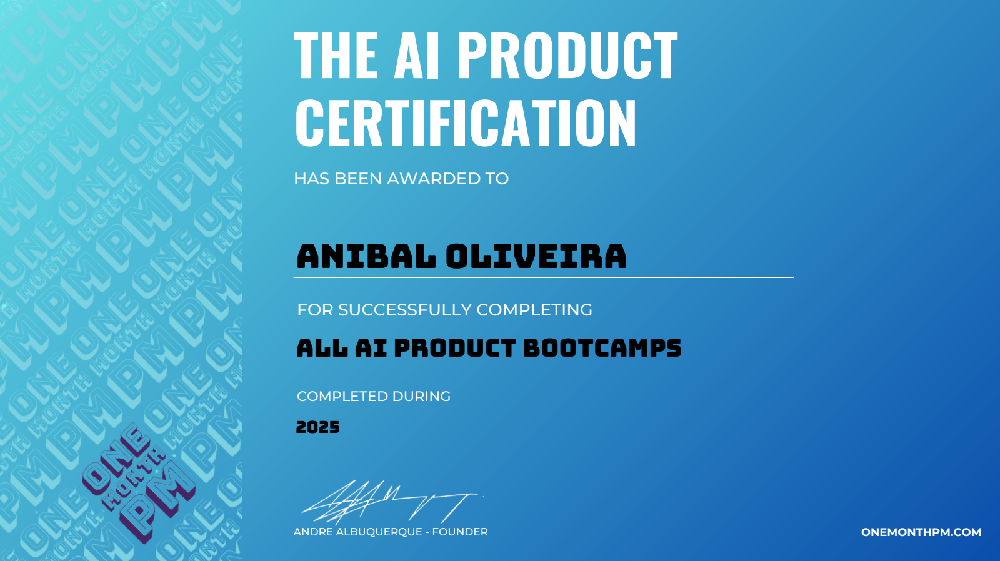
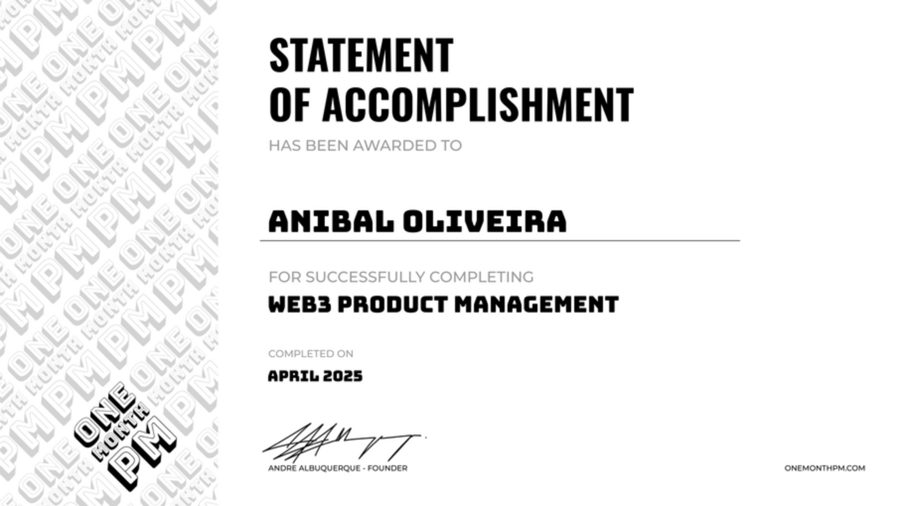

About me
Senior UX Product Designer and certified Product Owner
I'm Aníbal, based in Porto. For twenty years I've turned ideas into digital products across AI, IoT, e-commerce and cloud, in SaaS, B2B and B2C: mostly as the designer who shapes the experience, and also as the product owner or manager who decides what gets built, in what order and why.
I start from evidence, such as interviews, observation and the documents a company already has, and turn it into something a team can commit to: a service blueprint, a backlog, a prototype. I'm drawn to emerging technologies that solve real problems, and I use AI tools to prototype in code and to move faster through research and specs.
When I'm not immersed in product, you'll find me exploring tech and macro trends, physics and cosmology, enjoying board games with friends, or navigating the rewarding journey of parenting.
Career
- Feb 2026 – Jul 2026FeedzaiSenior Product Designer · Contract, remote
Self-service onboarding and activation journeys for RiskOps Studio, which unifies the Fraud, AML and Identity applications. Case study
- Sep 2024 – Jan 2026Independent Product Design ConsultantFreelance, remote
Discovery, user research, prototyping and design systems, and roadmaps and requirements with client leadership.
- Sep 2022 – May 2024DEUS.AISenior Product Designer / Associate PM / Product Owner · Porto
AI products for clients: KB RetroTool as Product Owner for a 6-person Scrum team, Sancus AI as Associate PM, and Shell Mobility as lead designer.
- Oct 2019 – Sep 2022Tridonic, Zumtobel GroupSenior UX / Product Designer · Porto
IoT software for connected buildings: lichtMONITOR and the Tridonic Design System. Mentored a designer.
- Jan 2019 – Oct 2019Hitachi VantaraUser Experience Designer · Porto
More than 10 components and data-visualisation charts for the NEXT design system.
- Jul 2012 – Mar 2016Sonae MC, Continente OnlineMarketing Designer / Consultant · Porto
Research, A/B tests, more than 200 campaigns and a major redesign of the online supermarket that increased sales by 13%. Case study
- Dec 2008 – Jun 2018WebLiciousFounder: manager, designer, front-end developer, marketer · Porto
A web studio for more than 50 clients in Portugal and the UK, including NHS projects. Case study
- Mar 2004 – Nov 2008Early careerWeb Designer / Front-End Developer · London and Porto
Accessible websites for NHS organisations in London, and websites and CMS integrations for clients in Porto, with hands-on training so clients could manage their own sites.
Education
- 2003 – 2004ENA, Escola de Negócios e AdministraçãoPostgraduate degree, Internet Programming
- 1999 – 2003ESAD, Escola Superior de Artes e DesignBachelor's degree, Communication Design
Additional certifications

The Product MBA
A comprehensive program that prepares professionals with essential product management skills and knowledge, perfect for those seeking to strengthen their grasp of core principles and best practices.

Professional Scrum Product Owner II
A certification that validates advanced knowledge and skills in product ownership within the Scrum framework.

Product Strategy
Connecting vision with roadmapping, prioritization, and opportunity and solution identification. Focus on customer-centric frameworks, strategic decision-making, and navigating complex markets.

Discovery Expert
- Data for Product Managers
- Metrics definition, query and visualization
- Making data-informed decisions
- AI Prompting for Discovery
- Voice of the Customer
- Usability Testing

Product Delivery
- No Code for Product Managers
- AI Prompt Engineering
- 10x Productivity with AI
- Automate Workflows with AI
- Project Management Foundations
- Beyond Agile

Growth Specialist
- Growth 101
- Acquisition loops
- Measuring Growth
- A/B Testing
- Sales & Monetization
- Business & Finance

Product Leadership
- Transforming the Culture
- Building a Strategic Vision and Roadmap
- Turning Data into Storytelling
- Negotiation for Product Managers
- The Head of Product role
- Designing, organising & evolving teams
- Managing stakeholders and XFN teams
- Designing OKRs
- Budgeting, hiring & onboarding PMs
- Mentoring and coaching your PMs

AI Product Expert
- AI Problem Framing & Setup
- Scaling LLMs for Product Management
- AI & Data Strategy
- Gen AI for Product Ideation
- Audio AI for Customer Insights
- Image AI for Prototyping and Marketing
- Video AI for Education and Engagement
- Workflow Automation & AI Agents
- AI Marketing
- 10x Productivity with AI

Web3 Product Management
- Web3 Product Fundamentals
- Blockchain and Cryptography
- Smart Contracts and dApps
- Cryptocurrencies and Tokenomics
- Web3 Development Tools and Ecosystem
- Decentralized Finance (DeFi)
- NFTs and the Metaverse
- DAOs and Governance
- Security, Risks, and the Future of Web3